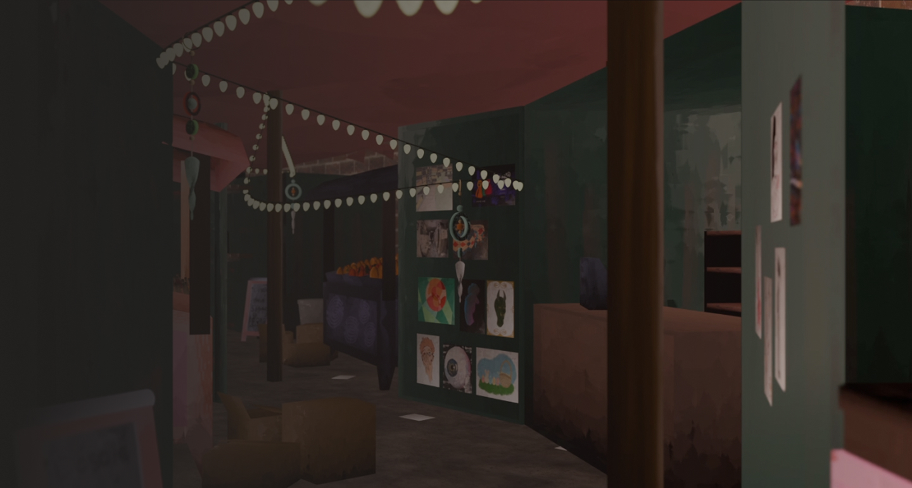
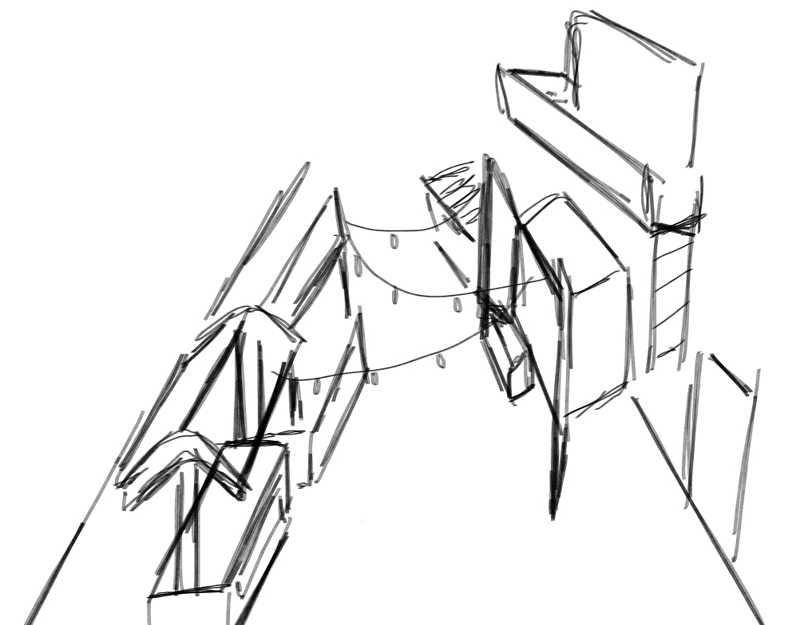
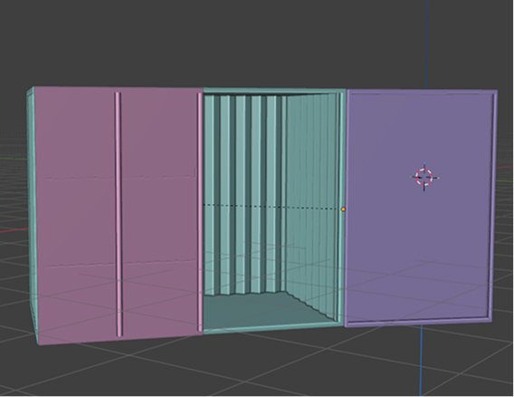
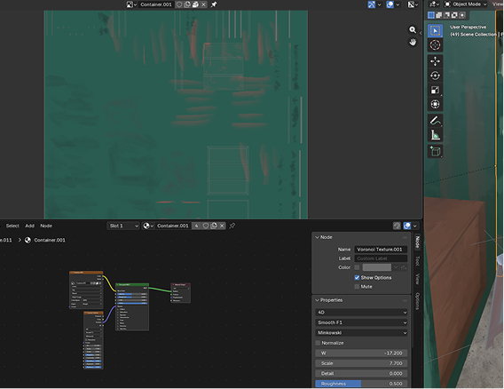
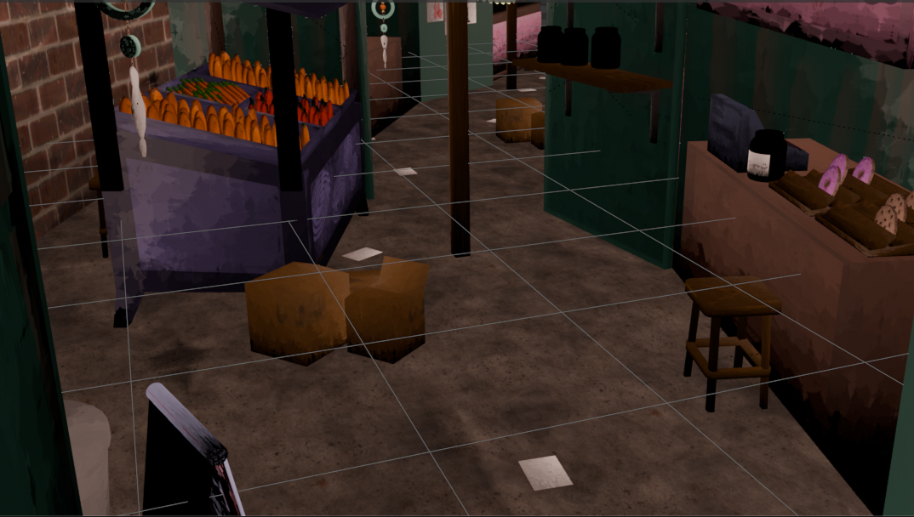
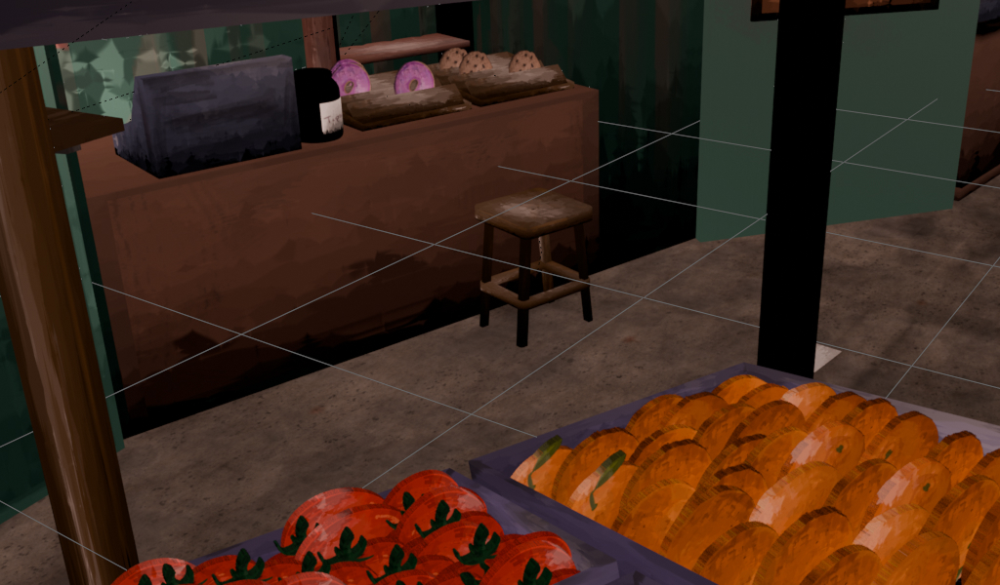

Modélisation 3D

Ce projet a été conçu dans le cadre du cours d'animation multimédia. Le thème était libre mais avions comme directive de suivre le modèle avec le mouvement de la caméra afin d'obtenir une boucle infinie.
J’ai fait la modélisation 3D, les texture ainsi que les différentes oeuvres placées dans le marché. Les crédits de la texture de la brique ainsi que celle du sol reviennent toutefois à ambientCG.
Aucune intelligence artificielle n’a été utilisée pour ce projet.

1.
La première étape a été de trouver un concept et d'en faire une ébauche afin de concrétiser le tout.
2.
J'ai modélisé les divers éléments du marché tels que les conteneurs ainsi que les items décoratifs et utilitaires.
3.
Une fois tous les modèles créés, j'ai assemblé les différens éléments de la scène dans le corridor représenté dans le projet. J'ai également ajouté les murs de même que le plafond.
4.
Une fois la scène créée, j'ai pu ajouter du relief en dessinant la texture sur les modèles et en ajoutant des nodules afin de créer un style plus artistique.
5.
J'ai ajouté de la lumière et un peu d'animation pour ensuite créer le rendu. Par la suite, j'ai fait le montage vidéo sur DaVinci Resolve puis j'y ai ajouté le son afin de créer une ambiance.









Ce projet m'a permis de créer un monde de toutes pièces et d'explorer différentes techniques de modélisation et de texture.